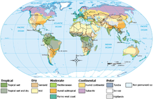

Climate...

Climates can be classified according to the average and typical ranges of different variables, most commonly temperature and precipitation. The most commonly used classification scheme is the one originally developed by Wladimir K�ppen. The Thornthwaite system,[19] in use since 1948, uses evapotranspiration as well as temperature and precipitation information to study animal species diversity and the potential impacts of climate changes.
Climate change...
Climate change is a change in the statistical distribution of weather patterns when that change lasts for an extended period of time (i.e., decades to millions of years). Climate change may refer to a change in average weather conditions, or in the time variation of weather within the context of longer-term average conditions. Climate change is caused by factors such as biotic processes, variations in solar radiation received by Earth, plate tectonics, and volcanic eruptions. Certain human activities have been identified as primary causes of ongoing climate change, often referred to as global warming.[1] There is no general agreement in scientific, media or policy documents as to the precise term to be used to refer to anthropogenic forced change; either "global warming" or "climate change" may be used.
Factors that can shape climate are called climate forcings or "forcing mechanisms".[5] These can be either "internal" or "external". Internal forcing mechanisms are natural processes within the climate system itself (e.g., the thermohaline circulation). External forcing mechanisms can be either anthropogenic�caused by humans�(e.g. increased emissions of greenhouse gases and dust) or natural (e.g., changes in solar output, the earth's orbit, volcano eruptions).
Physical evidence to observe climate change includes a range of parameters. Global records of surface temperature are available beginning from the mid-late 19th century. For earlier periods, most of the evidence is indirect�climatic changes are inferred from changes in proxies, indicators that reflect climate, such as ice cores,[6] dendrochronology, sea level change, and glacial geology. Other physical evidence includes arctic sea ice decline, cloud cover and precipitation, vegetation, animals and historical and archaeological evidence.
Terminology...
The most general definition of climate change is a change in the statistical properties (principally its mean and spread)[7] of the climate system when considered over long periods of time, regardless of cause.[8] Accordingly, fluctuations over periods shorter than a few decades, such as El Ni�o, do not represent climate change.
The term "climate change" is often used to refer specifically to anthropogenic climate change (also known as global warming). Anthropogenic climate change is caused by human activity, as opposed to changes in climate that may have resulted as part of Earth's natural processes.[2] In this sense, especially in the context of environmental policy, the term climate change has become synonymous with anthropogenic global warming. Within scientific journals, global warming refers to surface temperature increases while climate change includes global warming and everything else that increasing greenhouse gas levels affect.
A related term, "climatic change", was proposed by the World Meteorological Organization (WMO) in 1966 to encompass all forms of climatic variability on time-scales longer than 10 years, but regardless of cause. During the 1970s, the term climate change replaced climatic change to focus on anthropogenic causes, as it became clear that human activities had a potential to drastically alter the climate.[4] Climate change was incorporated in the title of the Intergovernmental Panel on Climate Change (IPCC) and the UN Framework Convention on Climate Change (UNFCCC). Climate change is now used as both a technical description of the process, as well as a noun used to describe the problem.
Weather...
Weather occurs due to density (temperature and moisture) differences between one place and another. These differences can occur due to the sun angle at any particular spot, which varies by latitude from the tropics. The strong temperature contrast between polar and tropical air gives rise to the jet stream. Weather systems in the mid-latitudes, such as extratropical cyclones, are caused by instabilities of the jet stream flow. Because the Earth's axis is tilted relative to its orbital plane, sunlight is incident at different angles at different times of the year. On the Earth's surface, temperatures usually range �40 �C (100 �F to -40 �F) annually. Over thousands of years, changes in the Earth's orbit have affected the amount and distribution of solar energy received by the Earth and influence long-term climate
Surface temperature differences in turn cause pressure differences. Higher altitudes are cooler than lower altitudes due to differences in compressional heating. Weather forecasting is the application of science and technology to predict the state of the atmosphere for a future time and a given location. The atmosphere is a chaotic system, and small changes to one part of the system can grow to have large effects on the system as a whole. Human attempts to control the weather have occurred throughout human history, and there is evidence that civilized human activity such as agriculture and industry has inadvertently modified weather patterns.
Weather is a set of all the phenomena occurring in a given atmospheric area at a given time.[21] Most weather phenomena occur in the troposphere,[22][23] just below the stratosphere. Weather refers, generally, to day-to-day temperature and precipitation activity, whereas climate is the term for the average atmospheric conditions over longer periods of time.[24] When used without qualification, "weather" is understood to be the weather of Earth.